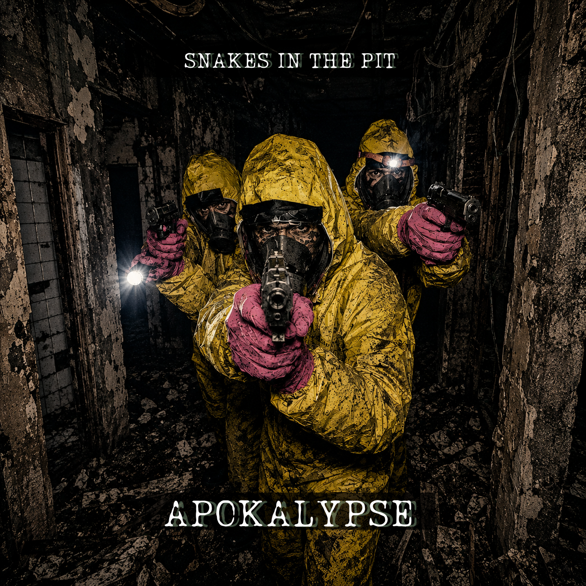

Review
SNAKES IN THE PIT - Apokalypse

Direkt als der Song losgeht: Slipknot-Vibes.
Nicht komplett, nicht als Kopie, aber dieses erste Gefühl ist da. Hartes Brett. Schwere Riffs. Breaks, bei denen man kurz guckt, ob der Nacken noch richtig angeschraubt ist. SNAKES IN THE PIT machen hier keine gemütliche Runde um den Block. Das ist schon ordentlich Druck auf dem Kessel.
Trotzdem wirkt „Apokalypse“ irgendwie erwachsener als das, was ich noch vom Album „Hamburg City Hardcore“ im Kopf habe. Nicht zahmer. Bei Sid's haarigen Eiern, nein. Die Band haut immer noch rein. Aber der Song fühlt sich ernster an. Vielleicht liegt es am Thema. Wahrscheinlich liegt es am Thema.
Was ich mutig finde: Der Song ist auf Deutsch.
Auf Englisch würde das vermutlich noch heftiger klingen. Mehr Abriss, mehr internationale Hardcore-Kante, mehr „versteh ich nicht komplett, aber aua“. Auf Deutsch passiert etwas anderes. Man versteht den Text. Man kann sich nicht hinter dem Sound verstecken. Und genau dadurch merkt man, dass SNAKES IN THE PIT hier den Finger tief in die Wunde stecken.
In welche Wunde?
In jede.
Das ist dann eben nicht nur harte Musik für Leute, die gerne mit verschränkten Armen vor der Bühne stehen und innerlich trotzdem alles kaputttreten. „Apokalypse“ hat Druck, aber auch Inhalt. Harte Riffs, brutale Breaks, deutsche Texte, die nicht bequem wegrauschen. Das ist unangenehmer. Und genau deshalb funktioniert es.
Vor knapp zwei Jahren gab es beim RandaleFUNK schon mal ein Video-Interview mit SNAKES IN THE PIT. Damals ging es viel um Hamburg City Hardcore, Punk, Hardcore und den ganzen schönen Wahnsinn drumherum. Wer die Band also noch ein bisschen besser einsortieren will, kann da ruhig noch mal reingucken. Schadet den Klicks auch nicht, und alte Interviews wollen schließlich auch mal wieder Tageslicht sehen.
Fazit: „Apokalypse“ klingt nach SNAKES IN THE PIT mit mehr Ernst im Blick. Brutal genug für den Nacken, verständlich genug für den Kopf. Und auf Deutsch eben nicht der einfache Weg. Genau das macht den Song stark.